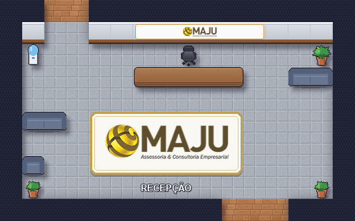
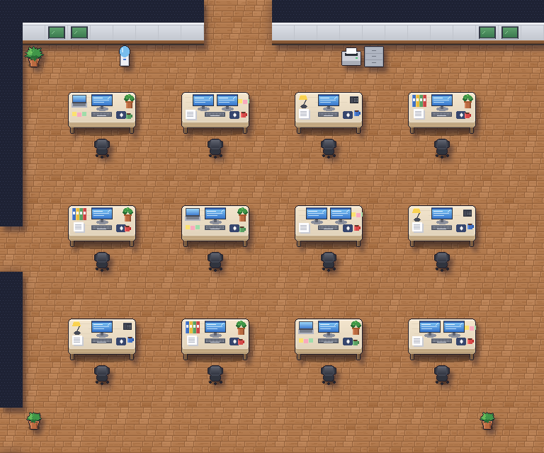
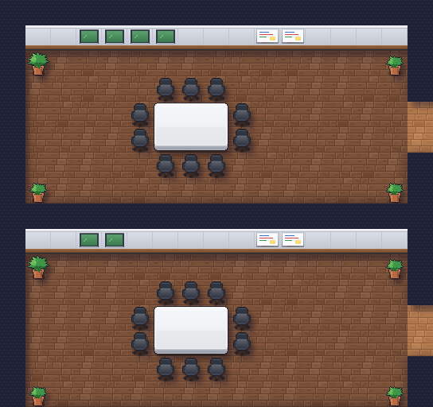
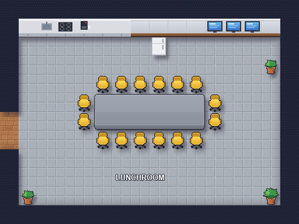
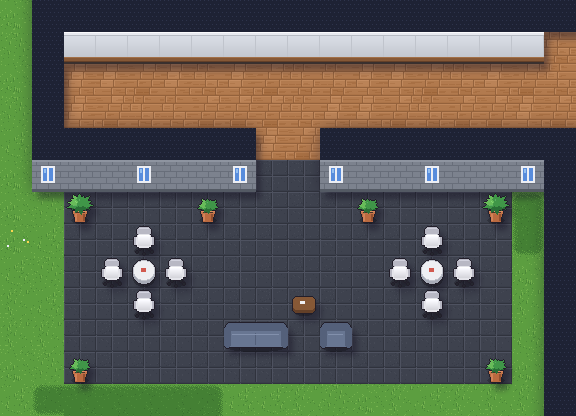
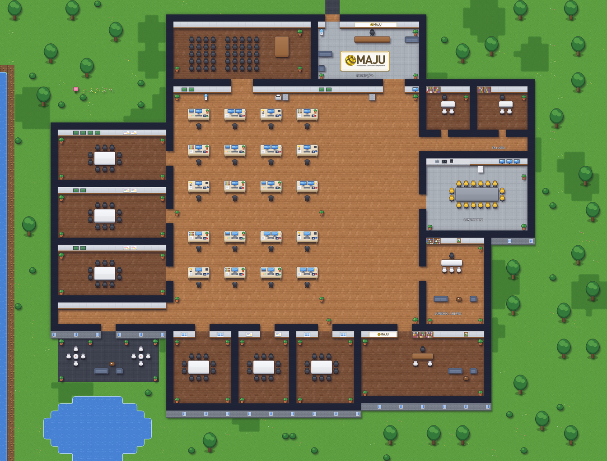

Bem-vindo(a) ao escritório virtual da MAJU
Aqui a equipe trabalha junta mesmo à distância: cada pessoa tem um personagem, e as conversas acontecem como no escritório de verdade, chegando perto de quem você quer falar.

Este tutorial leva menos de 2 minutos. Você pode revê-lo quando quiser no balcão da recepção.
Como andar
Paredes, mesas e plantas bloqueiam a passagem; cadeiras e sofás não, então dá para "sentar" neles.
Conversa por proximidade
Para falar com alguém, chegue perto da pessoa: o áudio e o vídeo de vocês abrem automaticamente numa bolha. Para sair da conversa, é só se afastar.

Salas de reunião
O escritório tem 6 salas de reunião e um auditório. Ao entrar numa delas, a videochamada da sala abre para todos que estão lá dentro. Ao sair da sala, você sai da chamada.

Use as salas para conversas com mais pessoas ou que precisam de privacidade.
Lunchroom e pátio

O Lunchroom é uma área silenciosa: lá ninguém entra em conversa, ideal para uma pausa.

Já o pátio, saindo pela porta de baixo à esquerda, é o lugar para um café e uma conversa descontraída.
Onde fica cada coisa
